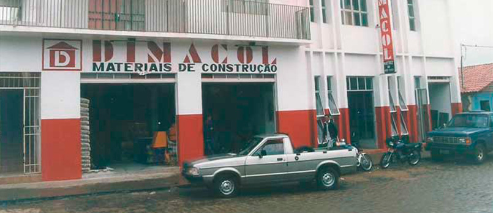
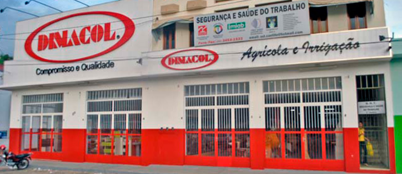
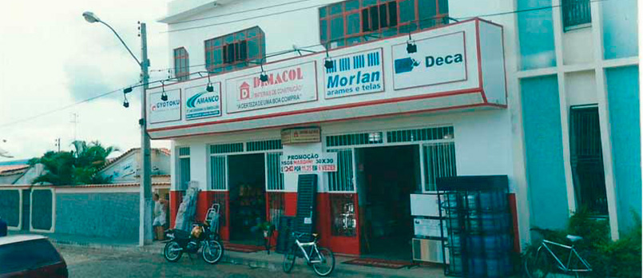
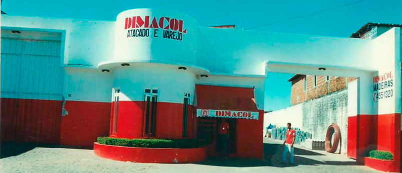
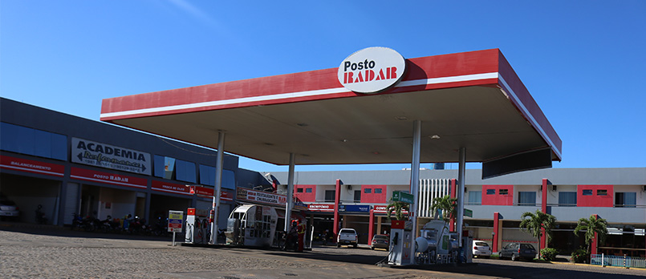
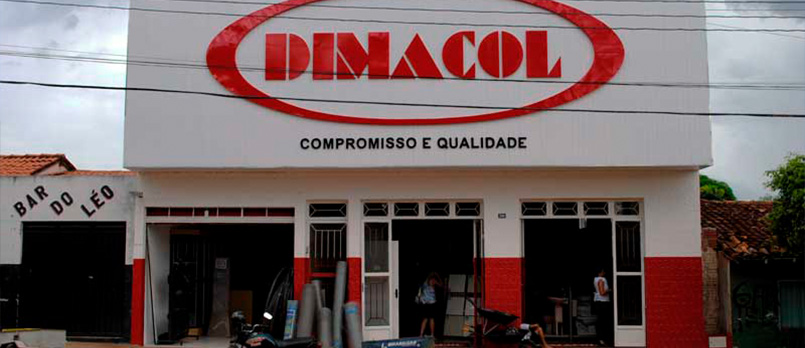
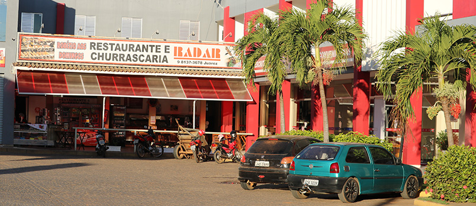
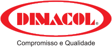
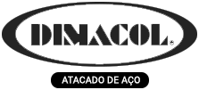
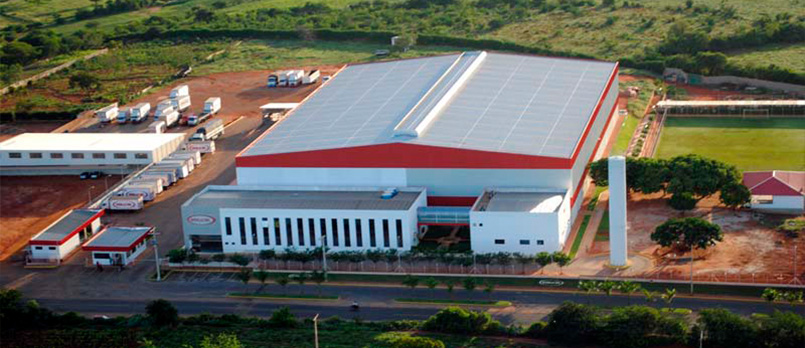

-
Fundação da Primeira loja Varejo em Caculé
1987

No ano de 1987, Valdir Saraiva de Carvalho, vindo de Licínio de Almeida, onde já mantinha
atividades comerciais com familiares, fundou a primeira loja DIMACOL em Caculé a fim de
atender as necessidades da comunidade local, bem como as cidades circunvizinhas no segmento de
materiais de construção.
Naquela época, já com muita visão e feeling comercial, o jovem empreendedor destacava-se por
trazer inovações ao comércio local, pois acreditava no potencial de crescimento que tinha
Caculé e região. Assim, Valdir Saraiva consolidou a marca Dimacol comercializando todo mix de
produtos de materiais de construção e produtos agrícolas.
-
Abriu a primeira filial de varejo na cidade de Caetité
1992

Vislumbrado com o potencial de desenvolvimento da região e impulsionado pela necessidade de
expandir e suprir a necessidade do mercado regional, no ano de 1992, Valdir Saraiva inaugura a
sua primeira filial na cidade de Caetité, atendendo a grande demanda que existia na região por
mix de produtos diversificados e de maior qualidade, contribuindo para o desenvolvimento
local. Hoje a Dimacol de Caetité se tornou a maior loja de varejo, sendo destaque no Grupo
Valdir Saraiva.
A Dimacol de Caetité é uma loja que está sempre antenada com o mercado, trazendo inovações,
oferecendo as melhores marcas para você construir ou reformar, da base ao acabamento, produtos
de alta linha com os melhores preços e condições de pagamento, além de atendimento singular.
Somos uma empresa socialmente justa que respeita as relações com clientes, fornecedores,
colaboradores e com a nossa sociedade.
-
Inaugurou a segunda loja varejo em Licínio de Almeida
1993

Com as lojas de Caculé (matriz) e Caetité já estabilizadas, chegou o momento do empreendedor
Valdir Saraiva voltar seus olhos à sua cidade natal retomando o legado deixado por seu pai em
sua terra natal, e em 1993 é inaugurada a loja Dimacol de Licínio de Almeida com o mesmo
conceito organizacional.
A Dimacol de Licínio de Almeida é uma loja que está sempre antenada com o mercado, trazendo
inovações, oferecendo as melhores marcas para você construir ou reformar, da base ao
acabamento, com os melhores preços e condições de pagamento, além de atendimento singular.
Somos uma empresa socialmente justa que respeita as relações com clientes, fornecedores,
colaboradores e com a nossa sociedade.
-
Inicia as atividades da Dimacol Atacado
1995

Com o sucesso e estabilidade das lojas Dimacol Caculé, Caetité e Licínio de Almeida,
acompanhando o crescimento do mercado regional no segmento de materiais de construção,
enxergando grandes oportunidades e unindo criatividade com seu espírito de empreendedor, o
empresário Valdir Saraiva, dá início no ano de 1995 as atividades da DIMACOL ATACADO.
No início, os pedidos eram feitos através de talões, o livro de preços impressos a cada semana
e os preços eram passados aos representantes via telefone.
Em 2005, com a região sudoeste já bem atendida, a Dimacol Atacado ganhava solidez, foi
necessário a incorporação de novas tecnologias e os pedidos de venda passaram a ser tirados
pelos RCAs através de palm tops, apesar da falta de internet em muitos pontos em que os
pedidos eram passados por telefone e mesmo com toda dificuldade, conseguiu se expandir para
todo mercado baiano e norte mineiro.
No ano de 2010, já com forte atuação em todo o Estado, conquistou a posição de maior
distribuidor de materiais de construção da Bahia, além de atuar no Norte de Minas Gerais,
Estado de Sergipe e as divisas de Pernambuco e Espírito Santo. Também neste ano, o
empreendedor Valdir Saraiva, fez amplos investimentos em tecnologia e infraestrutura que
vieram a ser consolidados em 2012 com a inauguração do novo centro de distribuição.
-
Ampliou-se os negócios e inaugurou o Posto Radar
2002

No ano de 2002 é inaugurado o mais completo posto de combustíveis e serviços da região,
proporcionando ao cliente segurança e comodidade em uma área ampla e confortável, oferecendo
todos os serviços que o seu carro precisa, como combustível certificado, troca de óleo,
alinhamento e balanceamento, lavagem e estacionamento, além de casa de peças para veículos
pesados com o padrão de atendimento e qualidade do Grupo Valdir Saraiva.
-
É inaugurada a terceira filial do varejo na cidade de Ibiassucê
2003

No ano de 2003, é inaugurada a terceira filial na cidade de Ibiassucê, completando um ciclo
na região que soma as lojas de Caculé, Caetité e Licínio de Almeida, oferecendo o que há de
mais moderno no segmento de materiais de construção, da base ao acabamento, além de produtos
agrícolas, pré-moldados e madeiras, tem suas ações sempre pautada no respeito nas relações com
clientes, fornecedores, colaboradores e a comunidade onde atua.
-
Inaugurou o Radar Palace Hotel
2006

Em 2006 é inaugurado o Radar Pálace Hotel, oferecendo o que há de melhor em hospedagem,
suprindo a demanda do público circulante em Caculé e região, além de atender aos grandes
eventos realizados na cidade, contribuindo assim para o desenvolvimento local.
O Radar Palace Hotel é a principal opção de hotel confortável em Caculé. Procuramos oferecer
as melhores acomodações em um ambiente tranquilo e com preços especiais, ideal para quem
procura conforto aliada a atendimento com excelência. O hotel ainda possui café da manhã
incluso na diária, Tv a cabo,Wifi, Smart TV, e Ducha com aquecimento central em todos os
apartamentos.
-
Fundou a Camcam Transportes
2007
No ano de 2007, enxergando mais um grande nicho, agora no mercado de transportes voltado a
atender as demandas de empresas da nossa microrregião que fazem suas compras na região Sul e
Sudeste do país, o empreendedor Valdir Saraiva, funda a Transportadora, Camcam Transportes,
aliando toda sua experiência no transporte de cargas próprias, oferecendo aos clientes
transporte rápido, seguro e econômico, com matriz em Caculé e filial na cidade de
Guarulhos/SP.
-
Reformulação da marca Dimacol
2009

Ao mudar a sua marca, a Dimacol, não busca apenas um novo desenho, mas traz um marco de
mudanças. Uma nova marca é sinal de uma nova era. De novos rumos e de novos horizontes. Surge
uma nova empresa, com novos conceitos e com francos objetivos. Simbolizando o caminho para
atingir novas conquistas e construir uma nova história.
-
Nasceu o Dimacol Atacado de Aço
2012

Em 2012 nasce o mais novo empreendimento, a distribuidora de aço para construção e
serralheiro, suprindo assim a uma grande demanda existente em nossa microrregião, atendendo
aos varejistas de ferragens para construção, serralherias e as metalúrgicas da região sudoeste
e norte de Minas Gerais, fortalecendo a atuação do Grupo Valdir Saraiva.
Inaugurou o CD – Centro de distribuição e Sede Administrativa do Grupo V.S.
2012

2012 torna-se um marco de grandes realizações, foi inaugurado o centro de distribuição e sede
administrativa, ações que fortaleceram o crescimento e a expansão de atuação para outros
Estados do Nordeste.
Localizada na cidade de Caculé – BA, na BA 617 km 1, a DIMACOL ATACADO possui um centro de
distribuição com área total de 80.000m², sendo 11.000m² de área coberta com pé direito de 12m
de altura e tem sua área de estocagem já em fase de ampliação, onde a atual capacidade de
armazenamento dos produtos será dobrada para o ano de 2016.
Nossa logística de distribuição conta com um mix de mais de 13.000 (treze) mil itens,
atendendo principalmente as demandas para materiais de construção e produtos agropecuários,
temos cerca de 15 mil clientes ativos, frota própria de aproximadamente 150 caminhões, 200
RCAs e quase 700 colaboradores.
Nossos diferenciais são: Agilidade com sistema de entregas rápidas; Mix de produtos da
construção ao agronegócio; Excelência no atendimento com uma equipe altamente qualificada;
Qualidade com os maiores e melhores fabricantes do país; Competitividade com as melhores
oportunidades que garantem rentabilidade aos nossos clientes.
-
Abriu mais um Atacado, VJC Distribuidor
2013
Visando ampliar seu mix de produtos e atender, ainda melhor, sua cartela de clientes, Valdir
Saraiva, abre um novo atacado, o VJC Atacado Distribuidor, o qual inclui em seu mix de
produtos, além de materiais de construção e agrícolas, produtos veterinários. Atuando
primeiramente na Bahia, a VJC já nasce vitoriosa, com ótima aceitação no mercado.